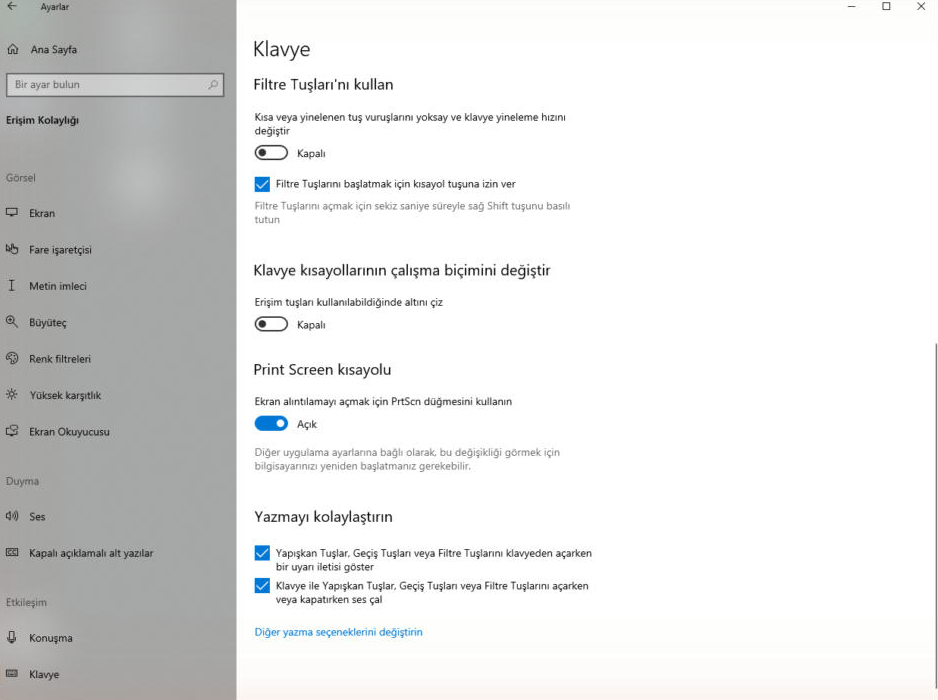
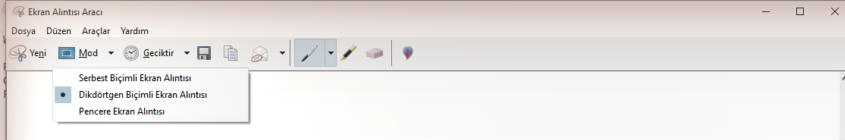
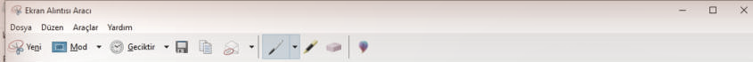

Print Screen (PrtSc) tuşunu Ekran Alıntısı Aracı ile çalışacak şekilde aktif etme, ekran görüntüsü alma ve Ctrl+V ile yapıştırma.
Varsayılan olarak Print Screen (PrtSc) tuşu yalnızca tüm ekranı olduğu gibi panoya kopyalar; alan seçme imkânı vermez. Aşağıdaki ayar açıldığında PrtSc tuşu, Windows'un yerleşik Ekran Alıntısı Aracı'nı başlatır ve istediğin alanı seçerek görüntü almayı sağlar.
1. Ayarı aç
Ayarlar > Erişilebilirlik > Klavye sayfasını aç ve Ekran Alıntısı Aracını açmak için Print Screen tuşunu kullan seçeneğini etkinleştir.

2. Alanı seç, yapıştır ve kaydet
Print Screen tuşuna bastığında Ekran Alıntısı Aracı açılır; fare ile istediğin alanı sürükleyerek işaretle. Seçimi bıraktığın anda görüntü otomatik olarak panoya kopyalanır — başka bir şey yapmana gerek yok.

Panoya kopyalanan görüntüyü, istediğin yere (bir belgeye, sohbet penceresine, Paint'e vb.) Ctrl + V tuşlarına basarak doğrudan yapıştırabilirsin.

Görüntüyü dosya olarak da saklamak istersen, düzenleme penceresindeki kaydet simgesine dokun; dosya Resimler > Ekran Görüntüleri klasörüne kaydedilir.